数说疫情0227：非湖北地区出现异常反弹，海外新增病例首超国内
原文链接 备份链接 国内非湖北地区25日新增病例24例，其中北京10例，从这些地方接受医学观察者数量、新增疑似病例以及待排查疑似病例等上游数据均持续稳步下降的态势看，此数据大幅反弹应属异常 文 |《财经》数据研究员徐进 图 |《财经》视觉 …

全国确诊病例增长率重回下降通道，海外疫情处在加速扩散阶段
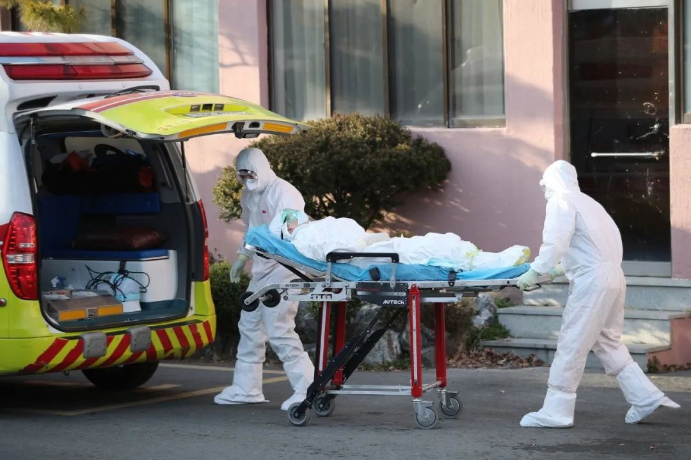
文 |《财经》数据研究员徐进 图 |《财经》视觉中心
编辑 | 谢丽容 郝洲
一、 累计确诊病例：全国总病例数有望控制在8万例左右
截至2月27日24:00，31个省（自治区、直辖市）和新疆生产建设兵团累计报告确诊新冠肺炎病例78824例，新增病例327例。
二、 新增病例：非湖北地区回归下降轨道，武汉平台拉锯
图1
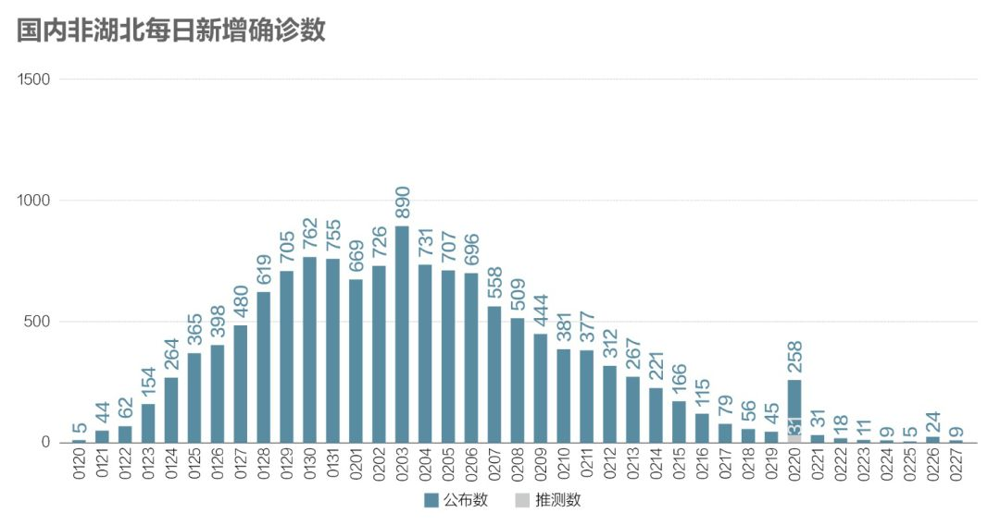
国内非湖北地区27日新增病例9例，北京回到零新增。河北1例，还是张家口。四川4例。再来分析一下北京26日的10例新增病例。根据新京报披露，此10例病例均为24日确诊病例（此传染案的1号病例）的密切接触者，确诊前全部处在集中隔离观察状态。目前新病例100%来自被隔离者，说明隔离是有效到位的。1号病例18日出现咳嗽症状，23日诊断为疑似，24日凌晨确诊，至26日已锁定密切接触者178人，并全部集中隔离，力度也是相当大的。从新京报信息可以进一步看出，1号病例于2月3日-2月9日与此案0号病例有过密切接触。0号病例2月7日出现呼吸道症状，9日返回廊坊，不久后确诊。有些遗憾的是，河北方面未能与北京联手更早将此案1号病例锁定为密接而加以隔离，当然这个要求也许过高。希望接下来此案病例不再继续增加，即使增加也都在已经隔离的密切接触者中。那样我们就可以说此案的传染扩散已被及时有效阻隔，局面完全在掌控之中。
再来说四川的4例新增病例。这4例均出自甘孜州道孚县。根据甘孜州卫健委的公开发布信息，4例病例均为该州在2月17-19日集中大排查中发现并在定点医院集中隔离医学观察的无症状感染者或密切接触者。此数据反弹应属前期存量病例消化，而非异常。甘孜州卫健委的公告称这4人所有排查到的密切接触人员均在隔离医学观察，后续异常爆发的可能性不大。
图2
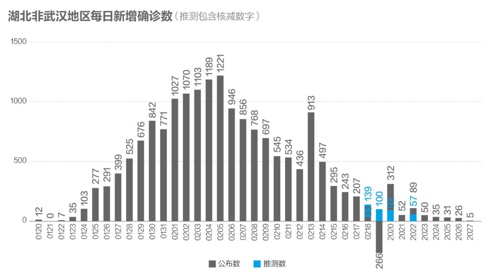
湖北非武汉地区下降为5例，首次回到个位数，湖北大多数市州已实现零新增。孝感从26日的15例降为1例，异常“警报”解除。
图3
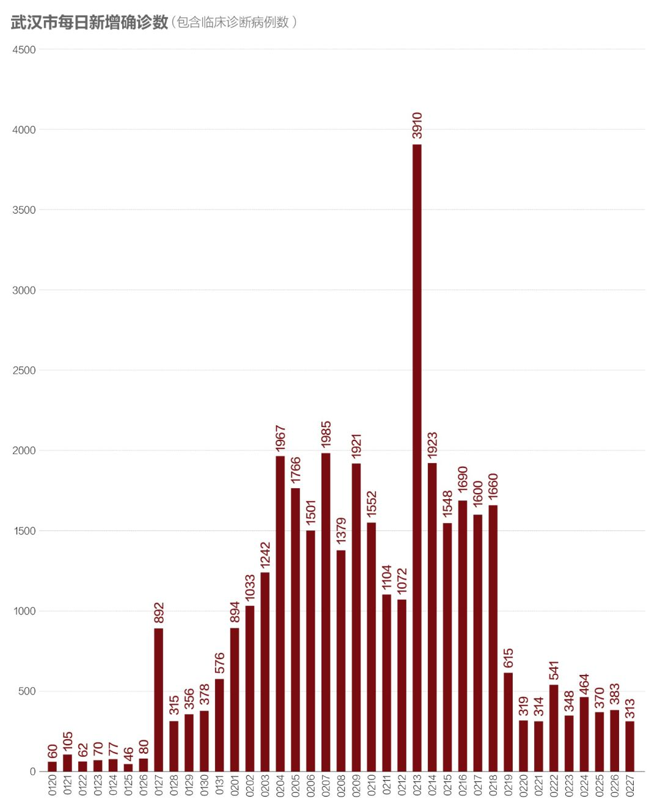
武汉新增略降，但还不能判定走出“震荡平台”。
三、 确诊病例增长率：回归下降轨道
图4
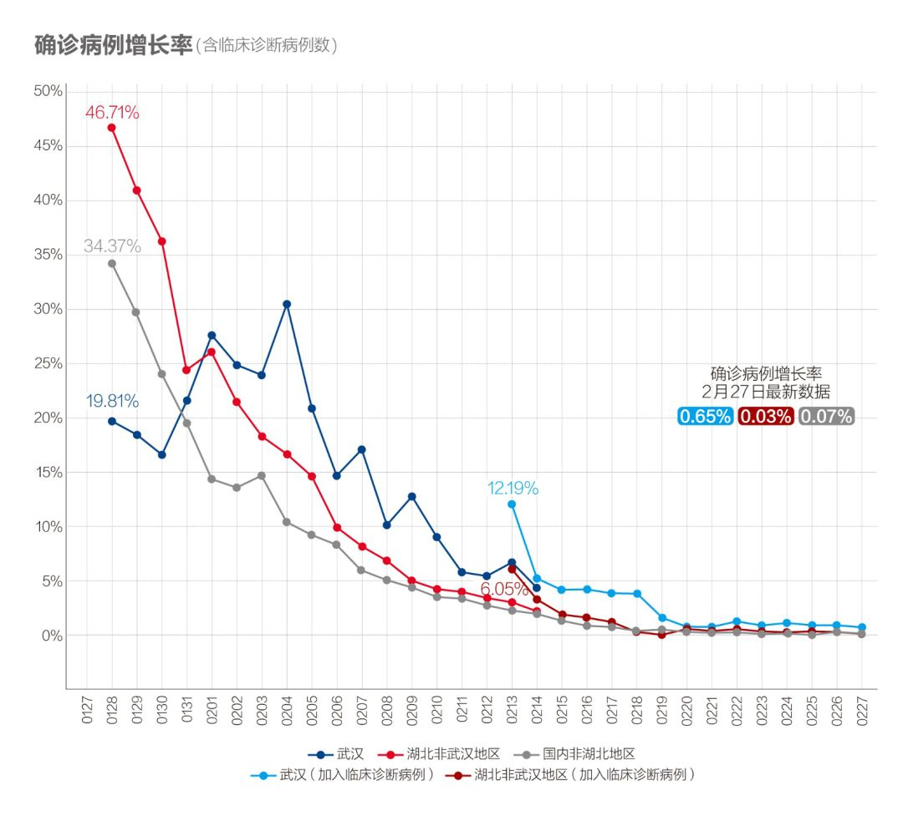
全国确诊病例增长率重回下降通道。
四、 密切接触者追踪，湖北追踪力度艰难提升
图5
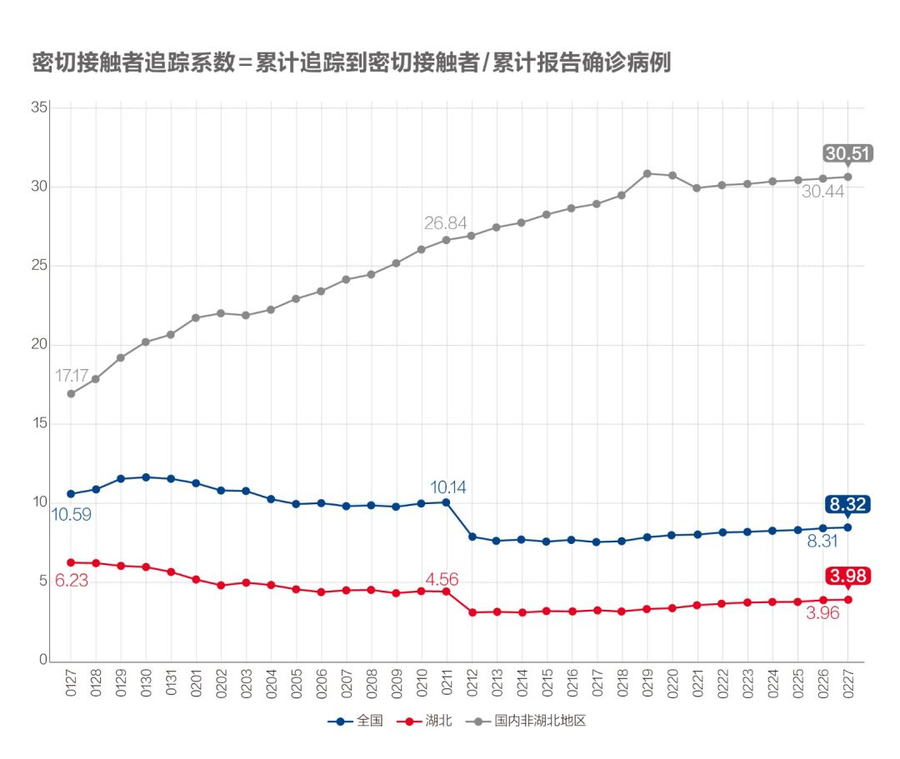
湖北数据显示其追踪力度持续提升，主要体现了武汉的顽强努力。非湖北地区维持在30以上。
图6
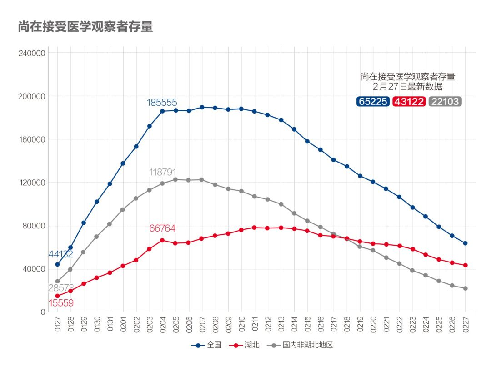
该存量继续下降，不断释放医疗资源、社会人力资源和隔离空间。
五、 疑似病例：湖北下降
图7

波动下降，符合预期。
图8

疑似存量平稳下降。
六、 在院治疗人数：继续释放医疗资源，武汉资源状况已完全逆转
图9
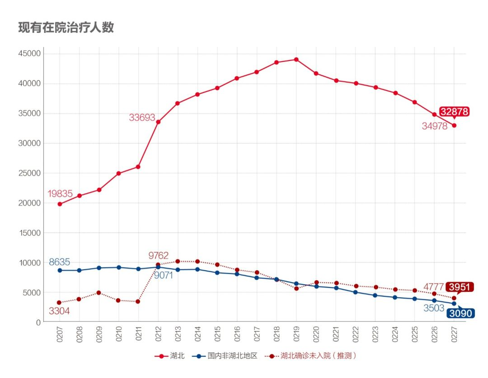
在院治疗人数存量下降，成规模释放病床床位。“湖北确诊未入院”人数也继续下降。
七、 重症率下降，病死率缓升、治愈率以更快速度上升
图10.1
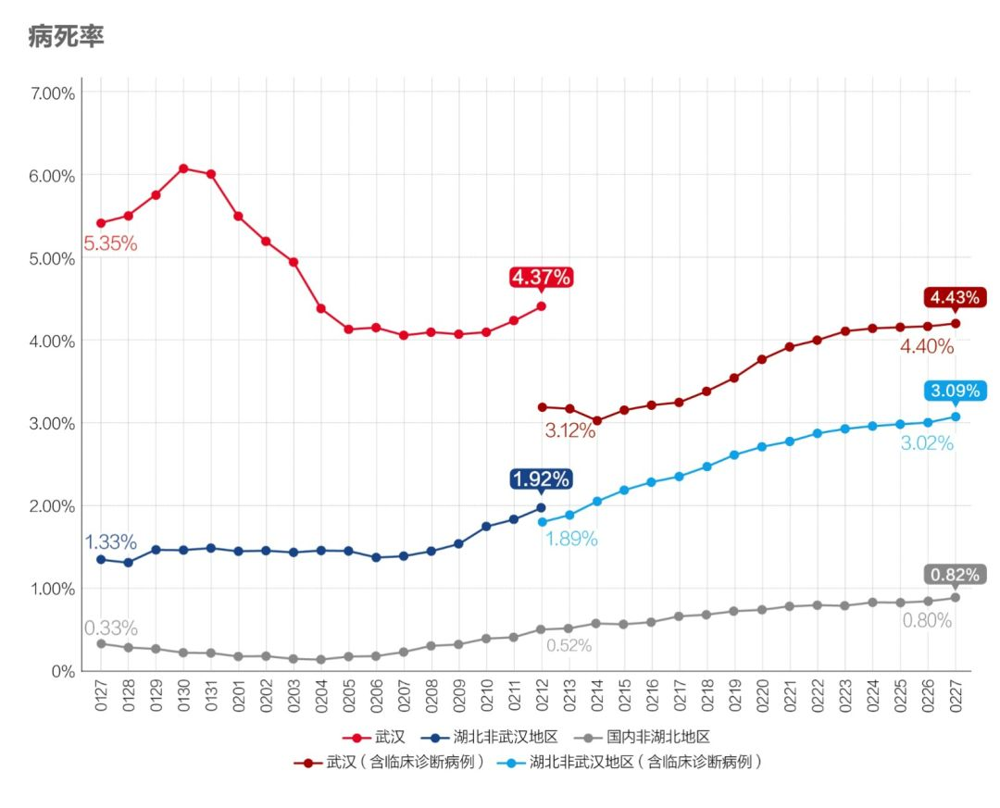
病死率自2月上旬以来持续缓升，基本符合疫情中病死率正常变化周期。但在湖北特别是武汉，也有救治措施不到位因素。2月24日，中央应对新冠肺炎疫情工作领导小组会议指出，武汉要落实分类收治措施，尽最大努力降低病死率。2月27日该小组会议再次强调从全国调集资源帮助武汉加强重症患者治疗。
图10.2

重症率明显下降。武汉近一周来下降尤为明显。
图11
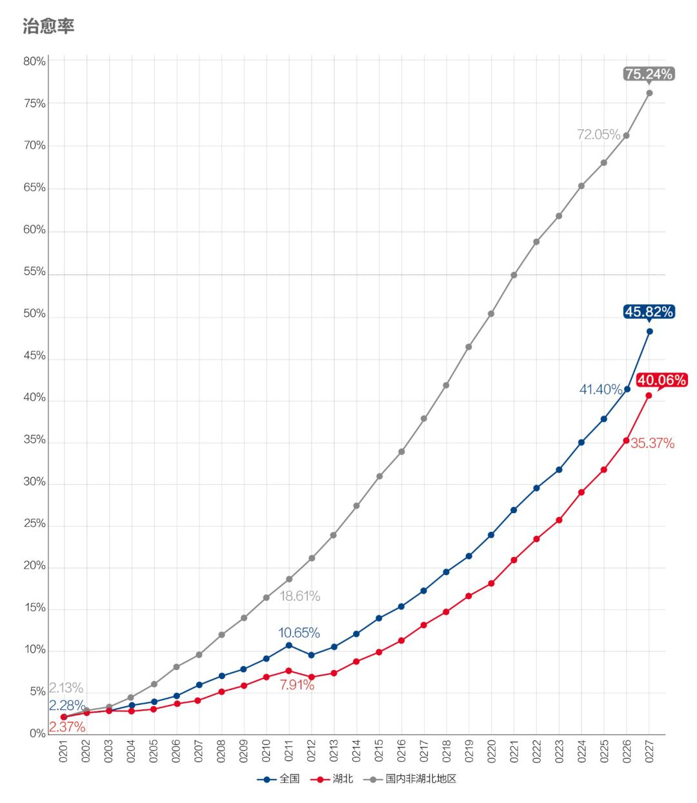
治愈率以更快速度上升。
八、 新增确诊和新增治愈剪刀差继续扩大
图12.1
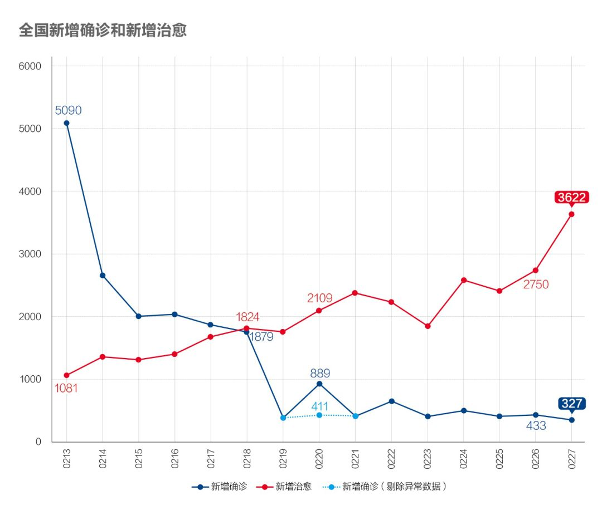
图12.2

新增确诊病例数和新增治愈病例数剪刀迅速扩大，资源持续释放，武汉的救治资源紧缺状况出现根本好转。
九、 海外新增病例加速扩散，韩国是重点
依据WHO的统计和韩、日、伊、意等主要国家各自发布的数据，（截至北京时间9:00），海外疫情处在加速扩散阶段。
图13.1
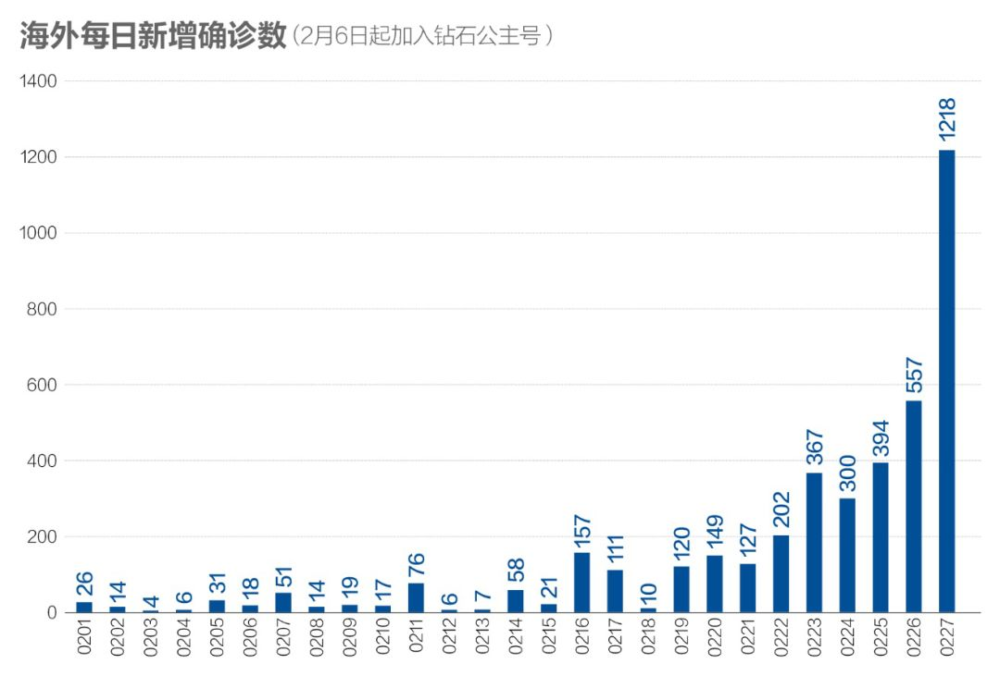
图13.2
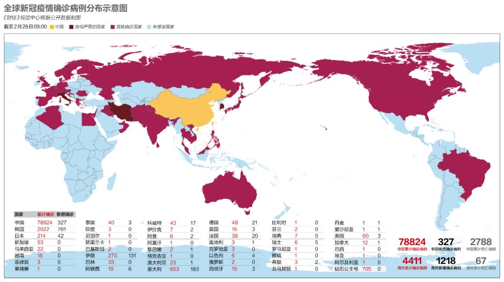
疫情全球分布主要状况如图13.2，目前中国以外值得重点关注的国家主要有韩国、意大利、伊朗等，其中以韩国的病例增长最为突出。此外，受意大利疫情扩散的影响，德国、法国、西班牙昨日也都出现明显增长。
图14.3

小结：国内非湖北地区新增病例回归下降轨道，湖北非武汉地区新增趋零。海外疫情加速扩散。
**▼ 往期“数说疫情”可点击专题页查看**

▲点击图片查看更多疫情报道
责编 | 黄端 duanhuang@caijing.com.cn
本文为《财经》杂志原创文章，未经授权不得转载或建立镜像。如需转载，请在文末留言申请并获取授权。
原文链接 备份链接 国内非湖北地区25日新增病例24例，其中北京10例，从这些地方接受医学观察者数量、新增疑似病例以及待排查疑似病例等上游数据均持续稳步下降的态势看，此数据大幅反弹应属异常 文 |《财经》数据研究员徐进 图 |《财经》视觉 …
原文链接 备份链接 国内非湖北地区25日新增病例24例，其中北京10例，从这些地方接受医学观察者数量、新增疑似病例以及待排查疑似病例等上游数据均持续稳步下降的态势看，此数据大幅反弹应属异常。 本文 1849字，阅读全文约2分钟 …
原文链接 备份链接 全国多数省区已实现“零新增”，统计上未见疫情卷土重来证据，也未发现意味着疫情死灰复燃的个案 文/《财经》数据研究员徐进 图/《财经》视觉中心 编辑/谢丽容 今天是农历二月二“龙抬头”。按北方农村传统，今起春耕大忙开 …
原文链接 备份链接 全国21省份22日零新增，抗疫战果继续巩固。此前我们预测湖北疑似病例存量，在拉网排查取得成功后会于22日开始下降，最新数据确实印证了该预测 文 |《财经》数据研究员 徐进 图 |《财经》视觉中心 编辑 | 谢丽容 …
原文链接 备份链接 为什么我们说武汉战局出现了反守为攻的转机？主要有3点 文 |《财经》数据研究员 徐进 图 |《财经》视觉中心 编辑 | 谢丽容 一、 累计确诊病例：趋势现“顶” 截至2月21日24:00，全国累计报告确诊新冠肺炎病 …